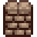
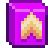

Bombas
| Imagem | Nome | Descrição | Ingredientes | Origem |
 |
Bombinha | Gera uma pequena explosão. Afaste-se! |
Minério de cobre (4) Carvão (1) |
Mineração nível 1 |
 |
Bomba | Gera uma explosão. Cuidado! |
Minério de ferro (4) Coal.png Carvão (1) |
Mineração nível 6 |
 |
Megabomba | Gera uma explosão poderosa. Utilize com o máximo de cuidado. |
Minério de ouro (4) Solar Essence.png Essência solar (1) Void Essence.png Essência nula (1) |
Mineração nível 8 |
Cercas
| Imagem | Nome | Descrição | Duração | Ingredientes | Fonte da Receita |
| Portão | Permite passar por uma cerca. | 100 dias | Madeira (10) | Início do jogo | |
 |
Cerca de madeira | Retém grama e animais! | 46-66 dias | Madeira (2) | Início do jogo |
|  | Cerca de Pedra | Dura mais que uma cerca de madeira. | 110-132 dias | Pedra (2) | Cultivo nível 2 |
 |
Cerca de ferro | Dura mais que uma cerca de pedra. | 240-264 dias | Barra de ferro (1) | Cultivo nível 4 |
 |
Cerca de madeira de lei | Um tipo especial de madeira. Muito bonita e resistente. | 558-562 dias | Madeira de lei (1) | Cultivo nível 6 |
Aspersores
| Imagem | Nome | Descrição | Ingredientes | Fonte da Receita |
 |
Aspersor | Rega os quatro espaços adjacentes toda manhã |
Barra de cobre (1) Barra de ferro (1) |
Cultivo nível 2 |
 |
Aspersor de qualidade | Rega 8 espaços adjacentes toda manhã. |
Barra de ferro (1) Barra de ouro (1) Quartzo refinado (1) |
Cultivo nível 6 |
| Aspersor de irídio | Rega 24 espaços adjacentes toda manhã. |
Barra de ouro (1) Barra de irídio (1) Conjunto de pilhas (1) |
Cultivo nível 9 |
Fertilizante
| Imagem | Nome | Descrição | Ingredientes | Fonte da Receita |
 |
Fertilizante básico | Melhora a qualidade do fertilizante um pouco, aumentando sua chance de criar plantações de qualidade. Misture no fertilizante arado. | Seiva (2) | Cultivo nível 1 |
 |
Fertilizante de qualidade | Melhora a qualidade do fertilizante, aumentando sua chance de plantar colheitas de qualidade. Misture no fertilizante arado. |
Seiva (2) Qualquer peixe (1) |
Cultivo nível 9 |
 |
Fertilizante Premium (5) | Aumenta muito a qualidade do solo, aumentando sua chance de crescer plantas de qualidade. Misture no solo arado. |
Barra de irídio (1) Seiva (40) |
Sala de Nozes do Sr. Qi por 20 gemas |
 |
Solo Foliar (5) | Estimula a produção de folhas. Garante um aumento de crescimento de pelo menos 10%. Misture no fertilizante arado |
Alcatrão de pinho (1) Concha (1) |
Cultivo nível 3 |
|  | Solo Foliar Premium (5) | Estimula a produção de folhas. Garante um aumento de crescimento de pelo menos 25%. Misture no fertilizante arado. |
Resina de carvalho (1) Coral.png Coral (1) |
Cultivo nível 8 |
Sementes
| Nome | Descrição | Ingredientes | Receita | |
| Sementes Silvestres (Prim) (Sementes de primavera) | Uma combinação de sementes selvagens de primavera |
Raiz-forte (1) Narciso (1) Alho-poró (1) Dente-de-leão (1) |
Coleta nível 1 | |
 |
Sementes Silvestres (Ver) (Sementes de verão) | Várias sementes de verão. |
Café de jardim (1) Grape.png Uva (1) Sweet Pea.png Ervilha-de-cheiro (1) |
Coleta nível 4 |
| Sementes Silvestres (Out) (Sementes de outono) | Uma combinação de sementes selvagens de outono |
Cogumelo comum (1) Wild Plum.png Ameixa selvagem (1) Hazelnut.png Avelã (1) Blackberry.png Amora (1) |
Coleta nível 6 | |
| Sementes Silvestres (Inv) (Sementes de inverno) | Coleção de sementes de inverno selvagens. |
Raiz de inverno (1) Crystal Fruit.png Fruta de cristal (1) Snow Yam.png Inhame de neve (1) Crocus.png Flor de açafrão (1) |
Coleta nível 7 | |
 |
Sementes antigas | Elas ainda crescem? | Semente antiga (1) | Doar uma Semente antiga para o Museu. |